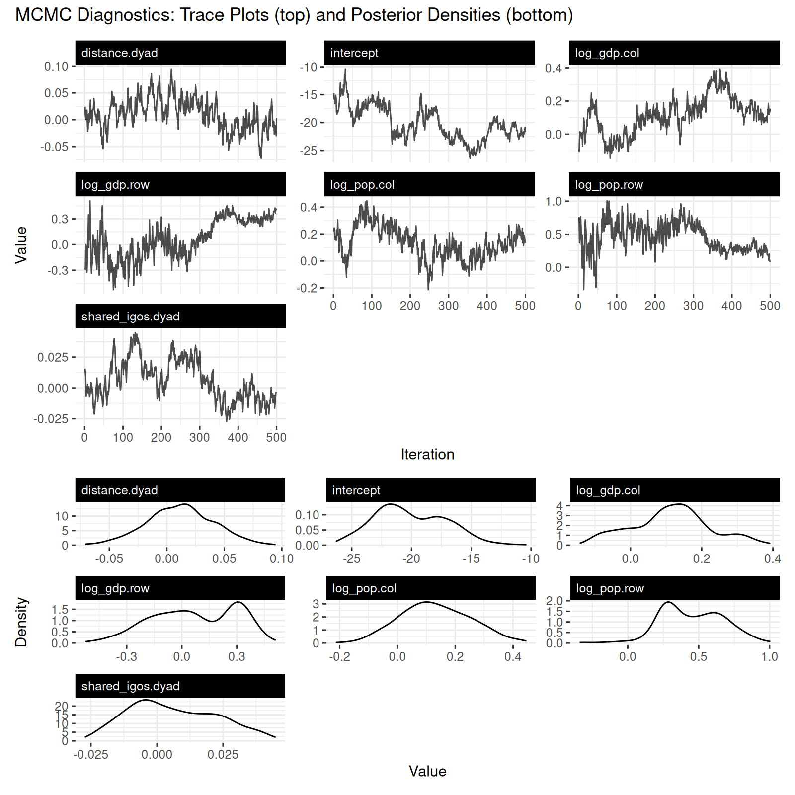
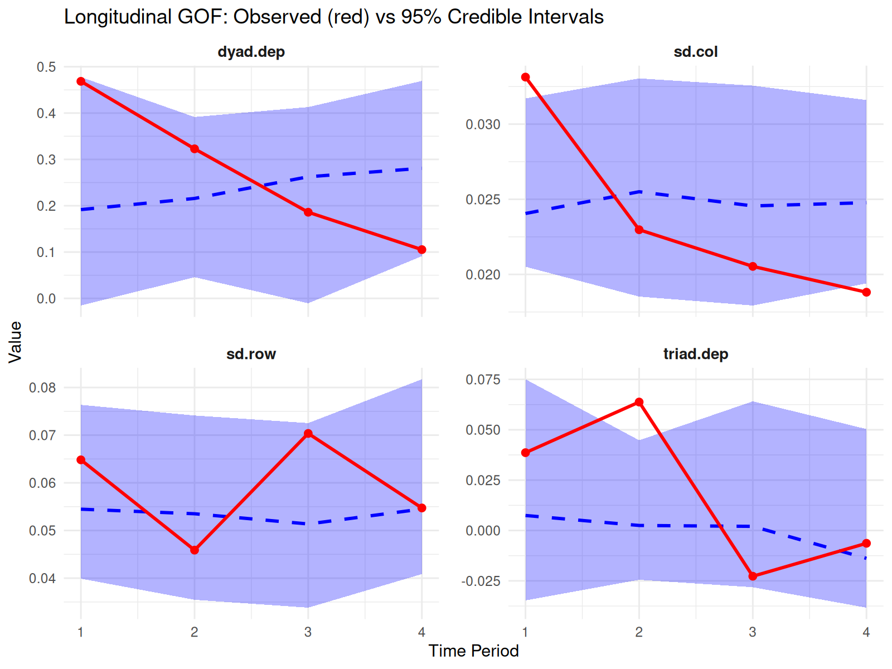
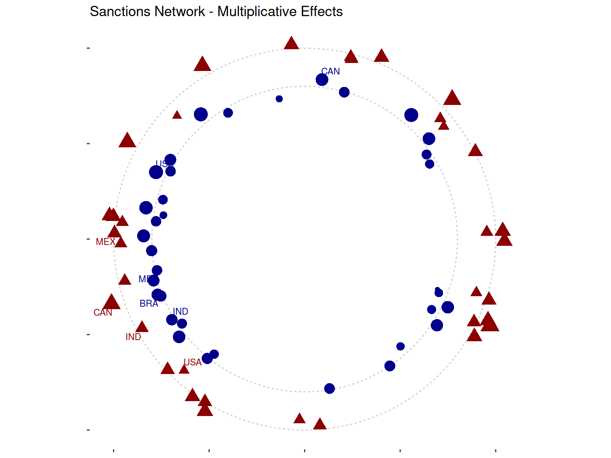

lame Overview
Cassy Dorff, Shahryar Minhas, and Tosin Salau
2026-03-29
Source:vignettes/lame-overview.Rmd
lame-overview.RmdPackage Overview
The lame package provides tools for fitting
Longitudinal Additive and
Multiplicative Effects models to
network data observed over time. If you study relationships between
actors (countries trading with each other, legislators co-sponsoring
bills, students forming friendships across semesters) and you have
repeated observations of those relationships, lame is
designed for you.
The modeling approach builds on the Additive and Multiplicative
Effects (AME) framework developed by Peter Hoff, whose amen package (GitHub) provides the
foundational implementation for cross-sectional network analysis. The
lame package extends this framework in several
directions:
-
Longitudinal and replicated data: While
amenfocuses on single networks (withame()) or basic replicated designs (withame_rep()),lameis built from the ground up for panel data, networks observed across multiple time periods, potentially with actors entering and leaving the sample. -
Dynamic effects: Actors’ positions in latent space
and their baseline activity levels can evolve over time via AR(1)
processes (
dynamic_uvanddynamic_ab), letting you model how network structure changes rather than assuming it is fixed. - C++ acceleration: Core sampling routines are implemented in Rcpp/RcppArmadillo for faster computation, which matters when you have many time periods or actors.
- Bipartite networks: Explicit support for two-mode networks (e.g., countries and treaties, users and products) with separate latent spaces for row and column nodes.
-
ggplot2-based diagnostics: Built-in visualization
functions (
trace_plot,gof_plot,ab_plot,uv_plot) produce publication-ready ggplot2 figures. -
Standard S3 methods:
coef(),confint(),fitted(),residuals(),predict(), andsimulate()work as you would expect from any R model object.
The package is part of the netify-verse, so it works
seamlessly with the netify
package for data preparation.
Application: International Sanctions
To see how lame works in practice, we analyze data from
the Threat and Imposition of Sanctions (TIES) dataset (Morgan et
al. 2014). The data cover 35 countries across four years (1993–1995 and
2000). The core question is straightforward: which country-level and
dyad-level factors predict whether one country sanctions another, and
are there latent patterns of sanctioning behavior beyond what these
covariates explain?
The dataset includes:
- Y: A list of directed binary adjacency matrices (one per year). Entry means country imposed sanctions on country in year .
- Xdyad: Dyadic covariates (geographic distance and the number of shared intergovernmental organizations (IGOs)) that capture relationship-level predictors.
- Xrow / Xcol: Sender and receiver covariates (log GDP and log population) capturing country-level characteristics. We use the same variables for both senders and receivers here, but different covariates can be specified for each role.
Fitting the Model
We fit a binary probit AME model with sender random effects
(rvar), receiver random effects (cvar), dyadic
correlation (dcor), and a 2-dimensional latent space
(R = 2). The random effects capture the fact that some
countries are simply more active sanctioners (sender effects) or more
frequent targets (receiver effects), while the latent space picks up
residual patterns, groups of countries that sanction similar targets or
are targeted by the same senders.
# fit the AME model for binary data
# note: for real analyses, use burn >= 2000 and nscan >= 10000.
# sparse networks like this one require long chains.
fit <- lame(
Y = Y,
Xdyad = Xdyad, # dyadic covariates
Xrow = Xrow, # sender covariates
Xcol = Xcol, # receiver covariates
family = "binary", # Binary probit model
rvar = TRUE, # sender random effects
cvar = TRUE, # receiver random effects
dcor = TRUE, # Dyadic correlation
R = 2, # Multiplicative effects dimension
symmetric = FALSE, # Directed network
burn = 500, # Burn-in iterations
nscan = 2500, # Post-burn-in iterations
odens = 5, # Thinning (keep every 5th sample)
verbose = FALSE, # Suppress iteration output
plot = FALSE # Suppress real-time plots
)Interpreting the Results
summary(fit)
=== Longitudinal AME Model Summary ===
Call:
NULL
Time periods: 4
Family: binary
Mode: unipartite
Regression coefficients:
------------------------
Estimate StdError z_value p_value CI_lower CI_upper
intercept -20.088 2.983 -6.733 0 -25.315 -14.378 ***
log_gdp.row 0.069 0.227 0.301 0.763 -0.373 0.413
log_pop.row 0.454 0.219 2.071 0.038 0.089 0.864 *
log_gdp.col 0.115 0.11 1.041 0.298 -0.094 0.328
log_pop.col 0.131 0.121 1.088 0.277 -0.084 0.366
distance.dyad 0.012 0.029 0.403 0.687 -0.046 0.067
shared_igos.dyad 0.006 0.016 0.372 0.71 -0.021 0.038
---
Signif. codes: 0 '***' 0.001 '**' 0.01 '*' 0.05 '.' 0.1 ' ' 1
Note: p-values are approximate (posterior mean / SD); use credible intervals for inference.
Variance components:
-------------------
Estimate StdError
va 1.632 1.989
cab 0.176 0.255
vb 0.061 0.040
rho 0.819 0.078
ve 1.000 0.000
(va = sender, cab = sender-receiver covariance, vb = receiver,
rho = dyadic correlation, ve = residual variance)The coefficients table reports posterior means, standard errors, and 95% credible intervals for each covariate. With a binary probit model, the coefficients are on the latent scale: positive values increase the probability of a sanction, negative values decrease it.
The variance components reveal where heterogeneity lies. The sender
variance (va) is much larger than the receiver variance
(vb), meaning the main source of heterogeneity is in how
actively countries impose sanctions, not in who gets targeted. A few
countries are prolific sanctioners while most rarely sanction at all.
The dyadic correlation (rho) captures reciprocity: high
values indicate that if country A sanctions country B, B is more likely
to sanction A.
The intercept is large and negative, reflecting the sparsity of the network (density around 1–2%). On the probability scale, this corresponds to a near-zero baseline probability of a sanction. The sender random effects and latent positions then shift individual dyads away from this baseline.
Checking Convergence
Because the model is estimated via MCMC, we need to verify that the
sampler has converged before trusting the results. The
trace_plot function shows the sampled values over
iterations (top panels) and the corresponding posterior densities
(bottom panels) for each parameter.
trace_plot(fit, params = "beta")
What to look for: the trace plots (top) should look like “fuzzy caterpillars,” bouncing around a stable mean without long-term trends or getting stuck in one region. The density plots (bottom) should be smooth and unimodal.
With 500 stored samples, you may notice slow mixing in some
parameters, particularly the intercept and row covariates. This is
typical for very sparse binary networks: with only about 20 ties per
year, the likelihood surface is flat and the sampler moves slowly. For a
publication, you would run much longer chains
(burn >= 2000, nscan >= 10000) and verify that
effective sample sizes (available via
coda::effectiveSize()) are adequate for all parameters.
Goodness of Fit
The gof_plot function compares observed network
statistics to their posterior predictive distributions. This tells us
whether the model can reproduce key structural features of the data, not
just the dyad-level relationships, but emergent properties like how much
actors vary in their degree (heterogeneity), whether friends-of-friends
tend to be friends (transitivity), and whether ties tend to be
reciprocated (dyadic dependence).
gof_plot(fit)
For a longitudinal model, gof_plot shows these
statistics across time. The observed values (points) are overlaid on the
posterior predictive intervals (shaded bands). When the observed values
fall inside the bands, the model is capturing that aspect of the network
well. When they fall outside, it signals that the model is missing
something. For instance, if the model consistently under-predicts
transitivity, it might suggest a higher-dimensional latent space is
needed.
Latent Space
The multiplicative effects capture patterns of association that go
beyond what the covariates and additive effects explain. The
uv_plot function visualizes these latent positions.
Countries positioned near each other in the sender space (triangles)
tend to sanction similar targets; countries near each other in the
receiver space (circles) tend to be sanctioned by the same senders.
Countries placed on opposite sides of the plot tend to have dissimilar
sanctioning patterns.
# network plot showing multiplicative effects
uv_plot(fit) +
ggtitle("Sanctions Network - Multiplicative Effects") +
theme_bw() +
theme(
panel.border = element_blank(),
legend.position = 'none',
axis.text = element_blank(),
axis.title = element_blank(),
panel.grid = element_blank()
)
The circular layout places sender positions (triangles) on the outer ring and receiver positions (circles) on an inner ring, scaled by magnitude. Countries with larger effects are placed further from the center, indicating they play a more distinctive role in the network. Countries clustered together share similar sanctioning profiles, while countries on opposite sides have dissimilar patterns.
Extracting Latent Positions
If you need the estimated latent positions in a tidy format (for
custom plots, merging with external data, or exporting to other tools),
the latent_positions() function returns a data frame:
lp <- latent_positions(fit)
head(lp)
actor dimension time value posterior_sd type
1 AFG 1 <NA> -1.6612284 NA U
2 ALB 1 <NA> 0.2034016 NA U
3 ARG 1 <NA> 1.0805660 NA U
4 AUS 1 <NA> -1.2405099 NA U
5 BEL 1 <NA> 0.4519149 NA U
6 BOL 1 <NA> -0.7265165 NA UEach row gives one actor’s position on one latent dimension at one
time point. For static models like this one, the positions are the same
across all time periods. For dynamic models
(dynamic_uv = TRUE), positions evolve over time and
latent_positions() returns each time point separately (see
the dynamic effects vignette).
When using dynamic latent positions, the latent space is only
identified up to rotation at each time point. The
procrustes_align() function aligns each time period’s
positions to the previous one, removing arbitrary rotations so that
trajectories across time are interpretable:
# procrustes alignment is useful for dynamic models.
# for a static model, positions are already aligned.
aligned <- procrustes_align(fit)
[36mℹ
[39m Latent positions are static (single time point). No alignment needed.
str(aligned$U)
num [1:35, 1:2] -1.661 0.203 1.081 -1.241 0.452 ...
- attr(*, "dimnames")=List of 2
..$ : chr [1:35] "AFG" "ALB" "ARG" "AUS" ...
..$ : NULLWhat’s Next?
This vignette covered the core workflow: fitting, convergence, GOF, and visualization. For more specialized topics:
- Single networks (no time series)? See Your First AME Model for a detailed cross-sectional walkthrough
- Two types of nodes? See Bipartite Networks
- Evolving network structure? See Dynamic Effects
- Just want the quick version? See Getting Started
References:
Hoff, PD (2021) Additive and Multiplicative Effects Network Models. Statistical Science 36, 34–50.
Morgan, T. Clifton, Bapat, N., & Kobayashi, Y. (2014). Threat and Imposition of Economic Sanctions 1945-2005. Conflict Management and Peace Science 31(5): 541-558.
Minhas, S., Dorff, C., Gallop, M. B., Foster, M., Liu, H., Tellez, J., & Ward, M. D. (2022). Taking dyads seriously. Political Science Research and Methods, 10(4), 703–721. doi:10.1017/psrm.2021.56